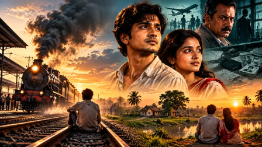

রেললাইনে জীবন শেষ করতে যাওয়া এক যুবককে বাঁচান এক রহস্যময় ভদ্রলোক। কিন্তু সেই সাহায্যের আড়ালেই লুকিয়ে ছিল চাকরির নামে মানুষ পাচারের এক ভয়ংকর জাল। কৃতজ্ঞতা বড়, না সত্য?
MYSKILLGLOBAL · বাংলা সাহিত্য
পরিচয়, প্রতারণা, ভালোবাসা ও নতুন জীবনের গল্প
১৯৭০-এর দশকের পটভূমিতে এক অসহায় যুবকের জীবন, এক অপরাধচক্রের অন্ধকার এবং সত্যের পক্ষে দাঁড়ানোর কাহিনি। একটি বাংলা রহস্য-সামাজিক উপন্যাস।

রেললাইনে জীবন শেষ করতে যাওয়া এক যুবককে বাঁচান এক রহস্যময় ভদ্রলোক। কিন্তু সেই সাহায্যের আড়ালেই লুকিয়ে ছিল চাকরির নামে মানুষ পাচারের এক ভয়ংকর জাল। কৃতজ্ঞতা বড়, না সত্য?